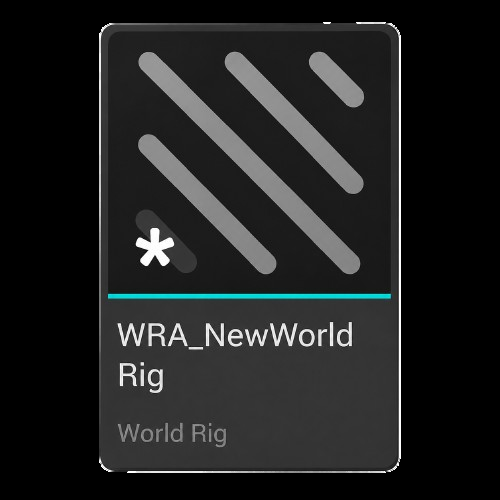
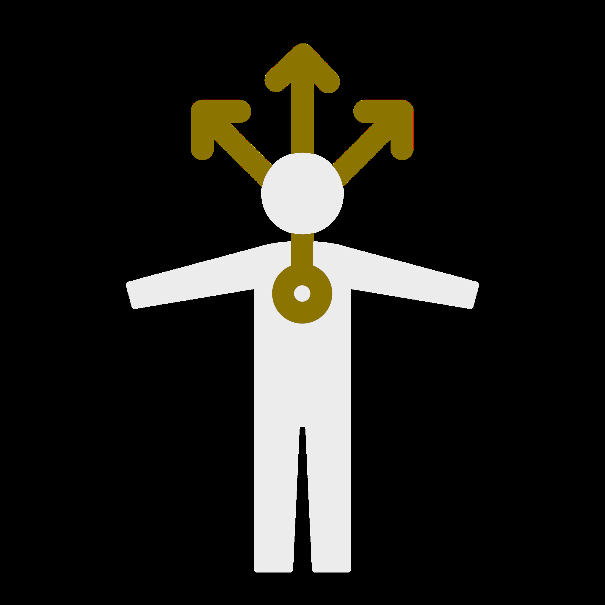
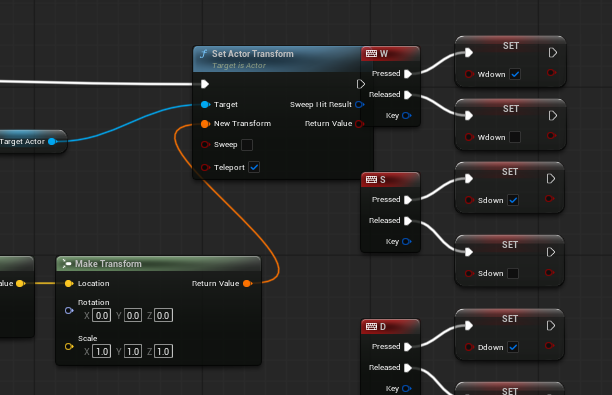
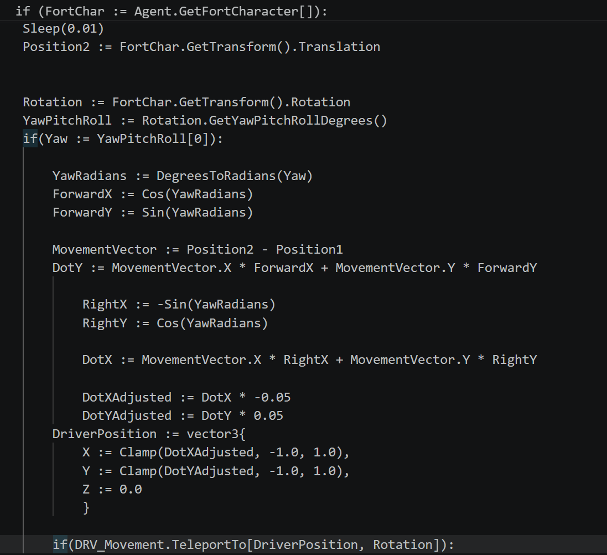

Documentation
Introduction
Control Rig for Gameplay Logic is an experimental framework for Unreal Engine and UEFN that expands Control Rig beyond its traditional role as an animation system.
Control Rig already provides a powerful visual environment for manipulating characters, skeletal meshes, transforms, and other data in real time. This project explores a simple question: what if that same system could be used to build gameplay logic?
Instead of limiting a Control Rig to determining how a character is posed, the framework allows rigs to participate in the wider game world. A rig can receive player input, process gameplay data, communicate with other rigs, and drive actors and interactive objects.
At the center of the framework is a new concept called a World Rig. Each World Rig connects a Control Rig with a linked Blueprint that acts as its interface with the game world. This allows Control Rig logic to send and receive information while retaining the visual, procedural workflow of Control Rig.
The framework is designed around two goals: expanding what creators can build with Control Rig and creating gameplay systems that can operate across both Unreal Engine and UEFN.
This documentation explains the current prototype, how World Rigs work, how rigs communicate, and how the framework can be used to build gameplay systems.
World Rigs

The World Rig is the core asset type introduced by Control Rig for Gameplay Logic. It connects the logic created inside a Control Rig to actors and systems in the game world.
Each World Rig consists of two linked components: a Control Rig and a Blueprint host. The Control Rig contains the visual logic, while the Blueprint provides the connection between that logic and the rest of the game.
Creating a World Rig
Creating a new World Rig automatically creates both its Control Rig and its linked Blueprint. Opening the World Rig takes the creator directly into the familiar Control Rig editor, allowing gameplay systems to be authored using the same graph-based workflow as a traditional Control Rig.
The linked Blueprint is managed alongside the World Rig rather than requiring the creator to manually construct and configure a separate host actor.
Hierarchy and Components
World Rigs can also use Control Rig's existing hierarchy system to represent objects they control.
When a skeletal mesh hierarchy is imported into a World Rig, the framework automatically adds the corresponding Skeletal Mesh Component to its linked Blueprint and establishes the connection between the two.
This allows the Control Rig hierarchy to represent more than abstract gameplay data—the objects represented inside the rig can correspond directly to components in the world.
Placing a World Rig
When a World Rig is placed into a level, its linked Blueprint is instantiated in the world.
This Blueprint acts as the World Rig's runtime host. It contains the components required by the rig and provides an interface through which the Control Rig can communicate with systems outside of itself.
This architecture keeps most of the creator-facing logic inside Control Rig, while the linked Blueprint handles the functionality necessary to connect that logic to the game world.
Why World Rigs Use Control Rigs and Blueprints
Although World Rigs are created and managed through the World Rig plugin, the World Rig itself is ultimately composed of standard Control Rig and Blueprint assets.
This is intentional. UEFN does not support Unreal Engine plugins, so the framework cannot depend on the World Rig plugin once content is brought into UEFN. By building World Rigs from assets that both environments understand, completed World Rigs can be imported into UEFN while retaining their gameplay logic and functionality.
The plugin therefore acts primarily as an authoring layer: it makes creating, linking, and working with World Rigs easier in Unreal Engine, while the resulting assets are designed to operate without the plugin.

World Rig Communication
World Rigs need a way to exchange information. Some information can be accessed directly—for example, the world-space location of another object. More abstract gameplay data, such as booleans, numbers, states, or inputs, requires a way to represent that information in a form Control Rig can access.
This is where Drivers come in.
Drivers
A Driver is an actor whose transform is used to store and transmit gameplay data. Rather than existing as a visible part of the game world, a Driver acts as a lightweight bridge between gameplay systems and Control Rig.
These channels can be assigned different meanings depending on what a World Rig needs to communicate.
A gameplay system can modify that value through its linked Blueprint. Another World Rig can then read the Driver's transform and interpret the value inside Control Rig.
Drivers aren't limited to booleans. The same approach can represent numerical values, player input, states, vectors, or multiple pieces of information simultaneously by assigning different data to different transform channels.
Why Drivers?
Control Rig already has a powerful system for working with transforms. Drivers take advantage of that existing capability rather than requiring Control Rig to understand every external gameplay system directly.
A Driver therefore acts as a shared language between otherwise separate World Rigs.
Importing into UEFN
One of the primary goals of Control Rig for Gameplay Logic is allowing World Rigs created in Unreal Engine to operate inside UEFN. Because a World Rig ultimately consists of standard Control Rig and Blueprint assets, its core logic can be brought into a UEFN project without requiring the World Rig plugin itself.
There is, however, one important difference between the two environments: how player input reaches the Movement Driver.
Player Input in Unreal Engine

In Unreal Engine, player input can be read directly through Blueprint. The World Rig's linked Blueprint detects keyboard or gamepad input and writes those values to the appropriate channels of the Movement Driver.
The Control Rig can then read the Movement Driver and use that information to control the character.
Player Input in UEFN

UEFN requires a different approach. Instead of relying on the same Blueprint input system, the UEFN implementation observes the Fortnite character's movement and uses Verse to reconstruct the player's underlying directional input.
In effect, the system works backwards: the Fortnite character's resulting movement provides information about what the player is doing, and that information is translated back into values representing the corresponding keyboard or gamepad input.
Those reconstructed values are then written to the same Movement Driver expected by the World Rig.
From the perspective of the World Rig, the source no longer matters. Both implementations produce the same Driver data, allowing the Control Rig gameplay logic itself to remain largely unchanged between Unreal Engine and UEFN.
The input layer is adapted rather than rebuilding the World Rig's actual gameplay logic for Fortnite.
Roadmap
The current prototype establishes the core World Rig workflow, cross-rig communication, and UE/UEFN compatibility. The next stage is focused on making that workflow faster, more automatic, and easier to test.
Automatic UEFN Import
A future version of the framework would automate the process of preparing a World Rig for UEFN. Instead of manually moving assets and replacing environment-specific pieces, the plugin would package the compatible Control Rig and Blueprint assets and prepare them for import automatically.
As part of that process, Unreal Engine-specific Movement Drivers could be replaced with their UEFN-compatible equivalents so the same gameplay system can move between environments with minimal manual setup.
Global Variables
The framework could also provide global variables shared across every World Rig in a project.
Instead of routing commonly used values through individual Driver actors, creators could define shared gameplay data once and access it from any Control Rig. This would make larger systems easier to organize while still allowing Drivers to handle more specialized communication.
Live Link Input for UEFN Editor Testing
One of the largest workflow improvements would be a toggleable Live Link Input control for testing World Rigs directly inside UEFN's editor.
Normally, player-driven gameplay behavior must be tested by launching a Fortnite session. Live Link Input would instead feed test input directly into the World Rig while remaining in-editor, allowing creators to preview movement, interactions, and gameplay logic immediately.
The goal is to make working with a World Rig in UEFN feel much closer to working with one in Unreal Engine: edit the logic, provide input, and see the result without repeatedly launching a session.
Long-Term Goal
The long-term goal is for the framework to handle the differences between Unreal Engine and UEFN automatically, allowing creators to focus on building the gameplay system itself rather than maintaining separate implementations for each environment.